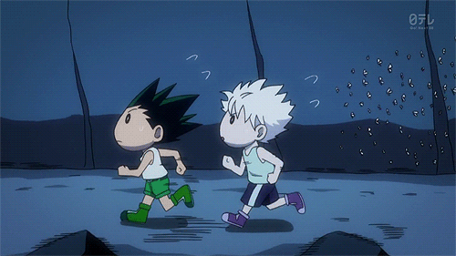
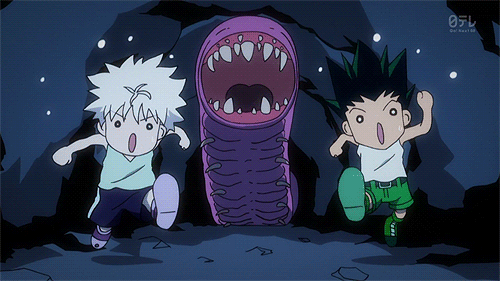
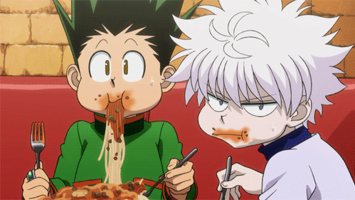
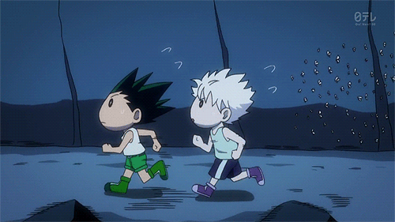
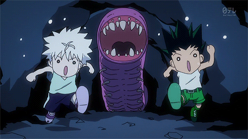
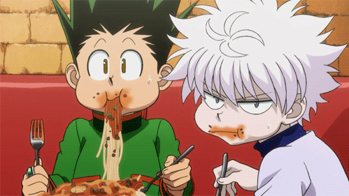

По життю я хочу малювати мультики, анімації та комікси, тому обрала як основною спеціальностю саме мульимедійний дизайн.

Фанатка аніме
По життю я хочу малювати мультики, анімації та комікси, тому обрала як основною спеціальностю саме мульимедійний дизайн.
